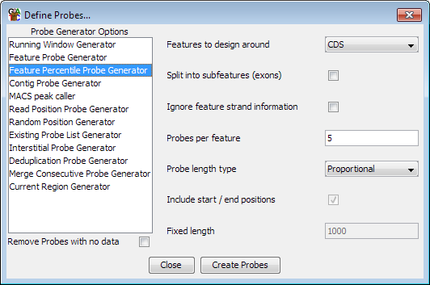

The Feature Percentile Probe Generator
The feature percentile probe generator is a way to place a set of equally
spaced and sized probes over the length of a set of features. It can be
useful if you're trying to quantitatively assess an effect which changes over
the length of a feature.
Options

The options you can set for this generator are:
- The class of feature against which you want to design probes
- If you want to split your feature into subfeatures. If you select this
then you will get a set of probes for each exon in a multi-exon feature
such as mRNA. If two mRNAs share a common exon then you will get duplicate
probes generated.
- If you want to ignore any strand information which is present on the features
you're using. If you select this then each feature, and the associated probes will
be assigned the unknown strand. This will affect the position of upstream and
downstream probes for features assigned to the reverse strand, and since this will
pass through to the probes generated it will also affect directional analyses such
as the probe trend plot.
- How many probes you want to generate per feature
- The type of probes you want to make. Proportional probes will fill the entire
area of the feature, but the probes from different features will be different lengths.
Fixed probes will be the same length for all features. Their centres will be spread
evenly over the length of the feature but depending on the overall feature length they
may overlap or be separated from each other
- If you use a fixed length probe you can choose whether you want to place probes
at the very start and end of the features
- If you use a fixed length probe you can specify the probe length you want to use